★★★★★
Every review, word for word
5.0/5
56 verified reviews across GetYourGuide, Google & Tripadvisor
23
GoogleSee our Google listing → 20 GetYourGuide
Verified bookings → 13 Tripadvisor
See our Tripadvisor listing →
★★★★★
“A huge thank you to your team! We had a wonderful time on the boat. We were welcomed in French and discovered some amazing places. We appreciated the selection of snacks and drinks available. I highly recommend this activity!”
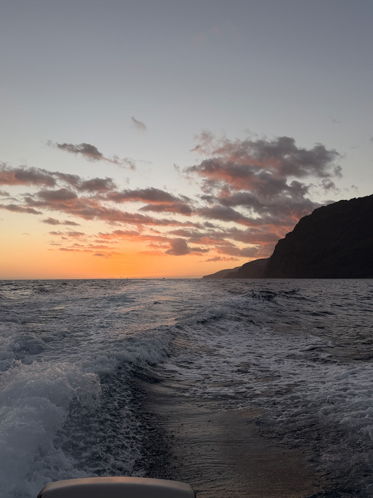
★★★★★
“Brilliant experience from start to finish yesterday. Excellent communication, superb views of the island, food, drinks and swimming. A really lovely family business that I would highly recommend. Thank you for a wonderful afternoon. ”
★★★★★
“As a family of five, we had an unforgettable excursion! We had several opportunities to swim in the bays, and we didn't want for anything! As skippers, father and son were a well-coordinated and courteous team. The snacks and drinks were very tasty. Highly recommended! One of our highlights from this vacation.”
Response from ChifbayDear Hubert, Thank you so much for these lovely words. We are delighted that the whole family enjoyed the swimming stops and that our father and son skipper team made you feel so well looked after. It truly means a lot to hear you consider it one of the highlights of your holiday. We hope to welcome you all back on board again one day. Warm regards, The Chifbay Team
★★★★★
“The boat is brand new and absolutely immaculate — not a detail missed anywhere. The snacks were genuinely delicious, the wine was cold, and everything felt thought through rather than thrown together. What set it apart, though, was the family running it. Watching the father-and-son dynamic play out on the water was honestly heartwarming. You can feel their values in how they treat you — warm, generous, proud of their island and eager to share it. They talked us through the landscape and the history of the coastline as we went, and because the tour is intimate, it never felt like being herded around on a booze cruise. The drone footage they captured was incredible and gave us the most beautiful photo we took during our entire stay. Madeira is full of dramatic, over-the-top, adrenaline-fueled activities. This quiet sunset on the water beat all of them. Service was impeccable. Cannot recommend it highly enough. ”
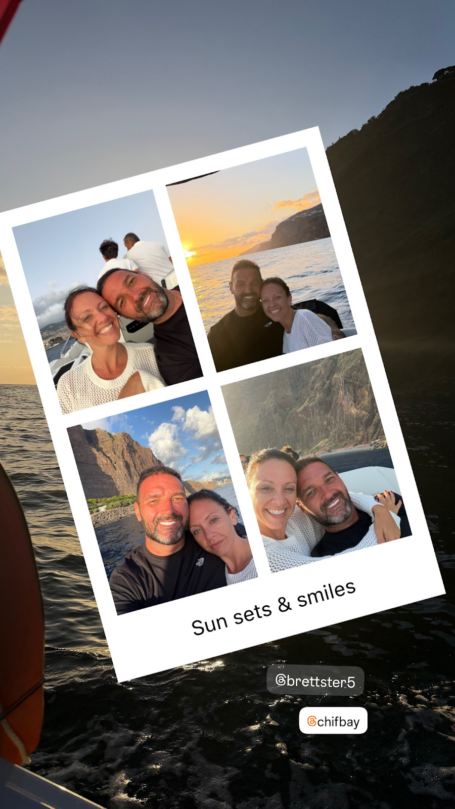
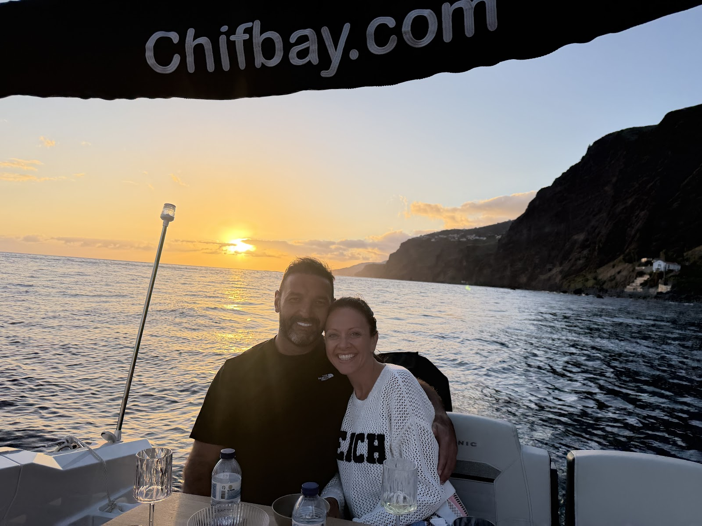
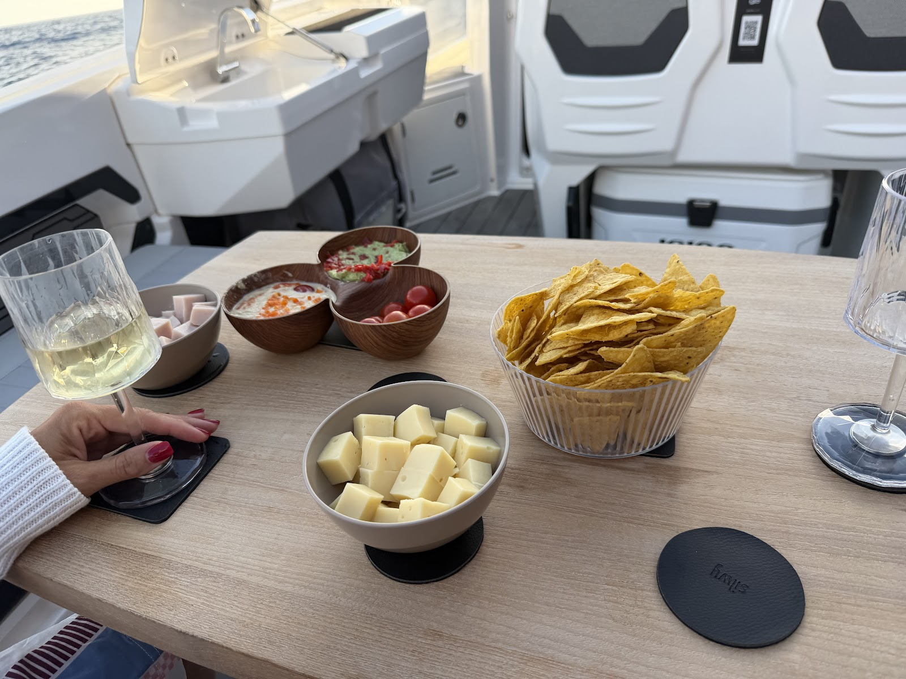
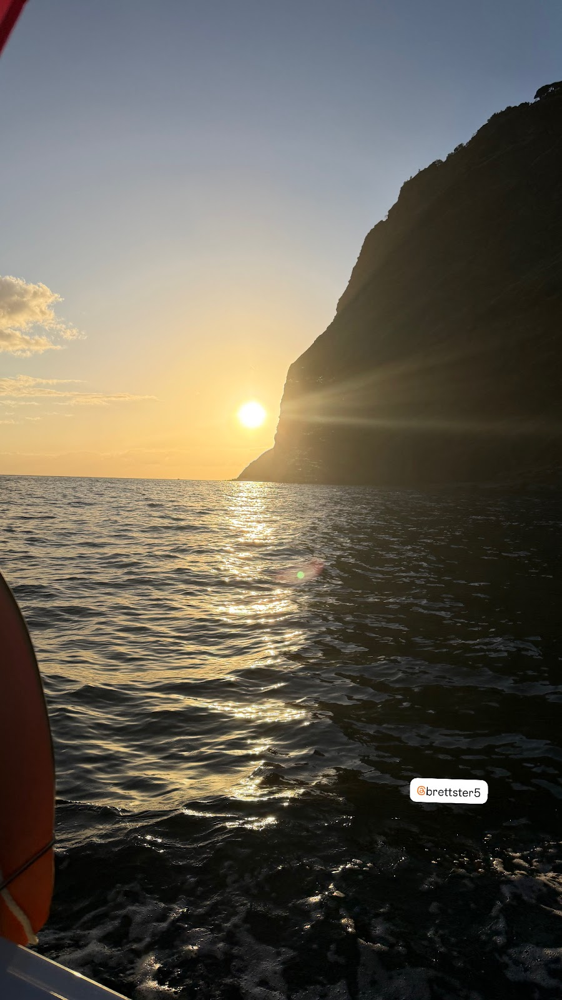
★★★★★
“Response from the owner 2 days ago Thank you so much for your 5 star review🤩We really appreciate it and hope to welcome you on board again soon. The Chifbay Team⚓️”
★★★★★
“Unbelievable experience 10/10 would recommend to anyone. Hands down the best part of our trip to Portugal. The boat, the staff, the service of the family business all was well worth it. Book with them NOW! ”
★★★★★
“Such a fun activity to do when you’re on vacation here. The guys on the boat are very friendly and helpful. This boat trip is a perfect way to relax and have fun in and around the ocean. I would really recommend to book this ”
★★★★★
“Amazing top to bottom. Crazy views. Great views. ”
★★★★★
“Brand new boat - family run - great food and fun ”
★★★★★
“Excellent and completely up to my expectations! Aboard the Chifbay, I had a great time, I highly recommend this experience to you! It is a very pleasant boat for sailing, it is very well laid out, large enough to be with several people, I really enjoyed sailing on it. I also wanted to say that the staff, composed of Paco and Hugo, is very professional, attentive to their clients, and always has little attentions for them that I wanted to highlight. My day on this boat was a great experience. I highly recommend it to you because you have a vision of Madeira that is different. I was also able to see a flying fish, that was also really very nice. And then the landscapes are breathtaking. Paco and Hugo also act as guides and they always have a nice anecdote to tell about Madeira and others. Furthermore, I checked several sites to compare prices and honestly, in terms of value for money, it is the cheapest I could find and I absolutely do not regret having set my sights on this one. Thanks again to Paco and Hugo for this day and once again, I recommend this experience with them to you.”
★★★★★
“The best thing we did in Madeira — 10/10 We took the sunset tour and it turned out to be the most memorable experience of our whole trip. Brand new boat, spotless. Snacks and wine were excellent. Not a single detail missed. The best part is the family who run it. The father-and-son dynamic on board was genuinely heartwarming — you can feel how much pride they take in this. They shared the history of the coastline as we cruised, and because the group is small it stays personal the entire time. The drone shots they took gave us the best photo of our whole stay. Madeira is packed with big, dramatic, adrenaline-pumping activities. This calm evening on the water topped every one of them. Impeccable service. Book it.”
★★★★★
“The tour is really beautiful! It was really great! The crew was incredibly attentive, courteous, and reserved at the right moments. It was just beautiful! I can recommend it to everyone!”
★★★★★
“Snorkel and swim trip with private boat. Was a nice trip with the boat. We took a private boat to different locations for snorkeling and swimming. With tasty snacks and drinks on board. Nice guys! Review of: Swim at Private Madeira Coast Cruise with Snacks and Drinks”
★★★★★
“Awesome private boating experience. Brilliant experience from start to finish. Excellent communication, superb views of the island , food, drinks and swimming. A really lovely family business that I would highly recommend. Thank you for a wonderful afternoon. Review of: Swim at Private Madeira Coast Cruise with Snacks and Drinks”
★★★★★
“We had the perfect night with Chifbay! We booked a private sunset cruise. The crew was perfectly on time. The boat was very clean and cared for. The crew was knowledgeable and engaging but not annoying. The food on board was delicious and fresh and they kept the drinks flowing to our liking. I would highly recommend this experience if you want a relaxed and beautiful way to spend an evening in Madeira. ”
★★★★★
“Sunset boat tour with Chifbay and it was one of the best things we did in Madeira. My wife and I loved every minute. Paco and Hugo took care of us the whole time, super friendly and clearly know what they’re doing. Food was really good too, wasn’t expecting that on a boat. And the view of the island as the sun went down was incredible. 100% recommend this tour to anyone visiting Funchal ”
★★★★★
“heel erg leuk. kundige, gezellige bemanning. luisterde goed naar onze wensen, waren klant vriendelijk. de snorkel spullen waren om erg netjes. leuk dat er gefilmd werd met de drone. wij vonden het super”
Response from ChifbayHartelijk dank voor jullie fijne reactie 😊 We zijn erg blij dat jullie zo hebben genoten van de boottocht, het snorkelen en de dronebeelden. Het was een plezier om jullie aan boord te hebben. Hopelijk mogen we jullie ooit opnieuw verwelkomen op Madeira The Chifbay Team
★★★★★
“The experience was perfect. The two crew members on board were so helpful and could not do enough for you. It was my fiancée’s birthday and they were able to organise a cake and candles to have on board. I would recommend this to anyone who is considering it. Brilliant.”
Response from ChifbayThank you so much for your kind words! We’re really happy we could make the birthday celebration a little more special with the cake and candles. It was lovely having you both on board, and we truly appreciate your recommendation. The Chifbay Team
★★★★★
“I had a fantastic day at sea on this boat. I wanted to mention that it was very comfortable and spacious enough for several people; we truly had a wonderful time. I also want to thank the crew, Paco and Hugo, who were our guides. They were incredibly friendly and attentive to their clients; it was a truly unforgettable experience. Furthermore, if you're lucky, you might spot flying fish, which was also very cool to see on the water. I highly recommend this experience with them. Having checked several websites, I can say they are very competitive in terms of value for money; I found them really affordable!”
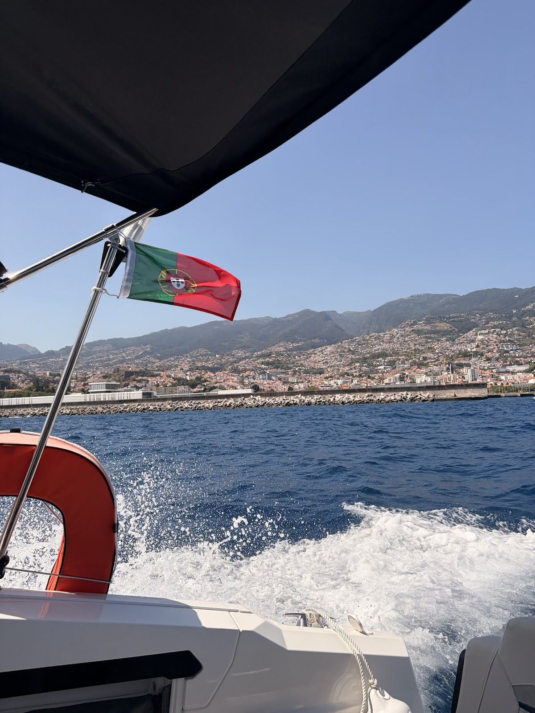
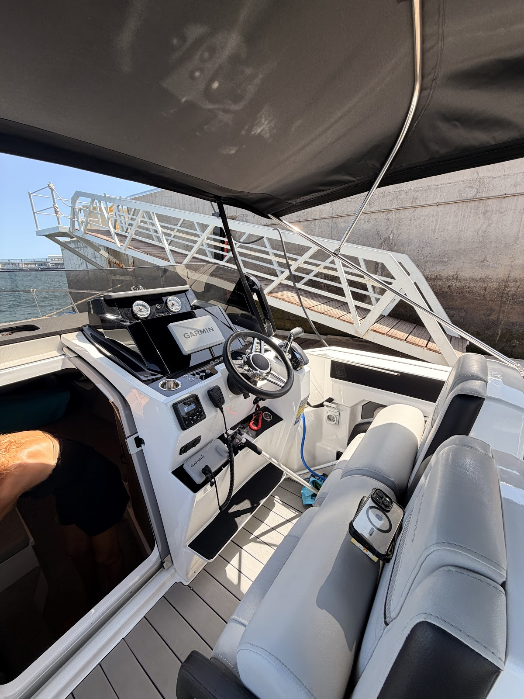
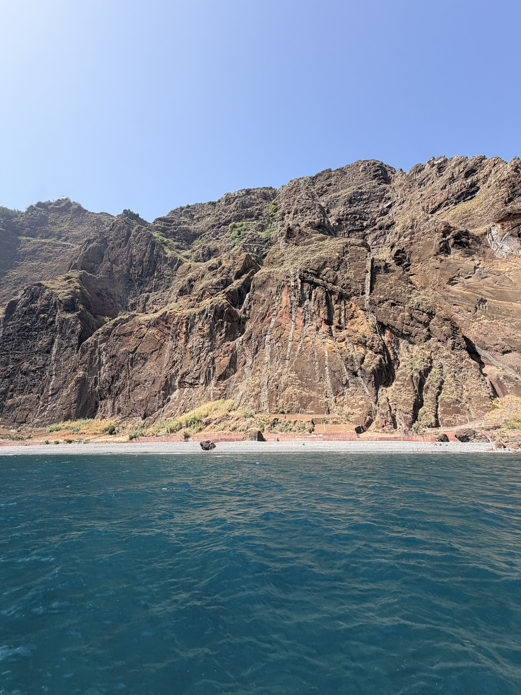
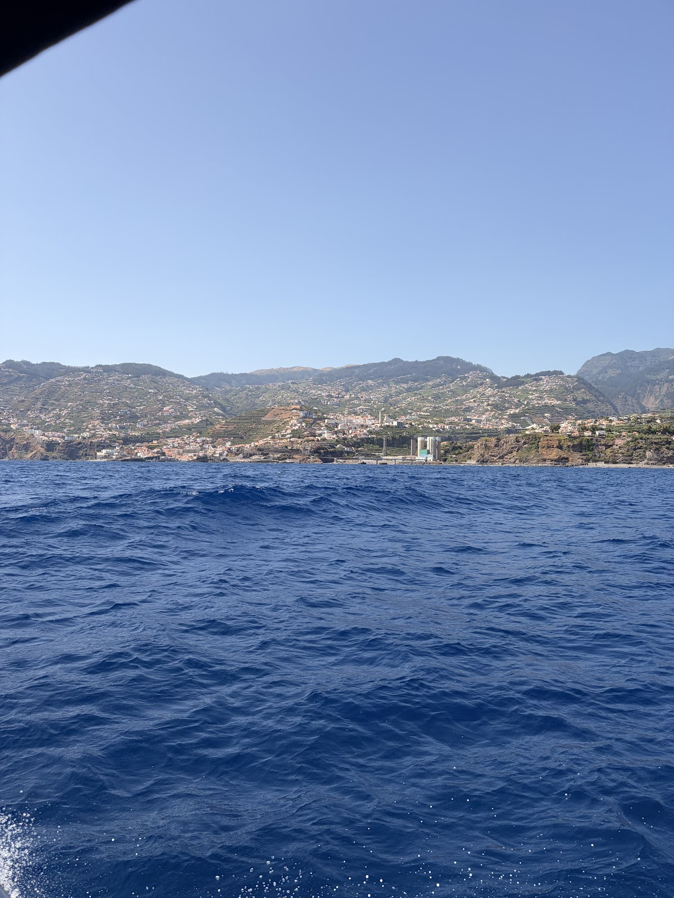
★★★★★
“Es war wirklich wunderschön! Die Crew um Hugo und seinen Sohn war super zuvorkommend, haben einige interessante Details über die Insel erklärt, waren aber auch in den richtigen Momenten nicht präsent, sodass man sich zu zweit gefühlt hat. Wir können dieses tolle Erlebnis zu wirklich jedem empfehlen!”
Response from ChifbayThank you so much for your kind review! We’re really happy you enjoyed your time with us and discovering Madeira from the sea. It was a pleasure having you on board and giving you the space to enjoy this special moment together. We hope to welcome you back one day The Chifbay Team⚓️
★★★★★
“Wonderful. It was unforgettable! Very friendly and attentive staff. I recommend it!”

★★★★★
“Excellent boat trip! The crew was very friendly and professional, the boat was comfortable, and the experience was very enjoyable. I recommend it to anyone who wants to enjoy a good time at sea.”

★★★★★
“We took a private boat tour in Madeira, accompanied by a guide team consisting of a father and his two sons – and it was an absolute highlight of our vacation. The three of them worked together seamlessly, warmly, and professionally. You could immediately tell that their passion and experience combined. The excellent drinks, delicious food, and fresh, perfectly ripe pineapple were particularly noteworthy – simply fantastic. The boat trip was sporty and fast, but always considerate and safe. It struck the perfect balance between action and relaxation. There were two or three opportunities to swim – anyone who wanted to could go in the water; it was all very straightforward. The onboard toilet was also a real plus. We had a blast the whole time and felt completely at ease. We're certain of one thing: if we're ever back in Madeira, we'll definitely be back!”
★★★★★
“We had a fantastic time with Hugo and Paco. They were incredibly helpful and attentive, going above and beyond to ensure we had the best possible experience, from swimming and sunset to drone video and a delicious aperitif. Thanks again, we highly recommend them!”
★★★★★
“A spectacular experience along the island's coast. Very attentive and helpful staff. There was never a shortage of drinks and good cheer. I highly recommend this boat trip.”
★★★★★
“An experience to repeat, it was fantastic, without a doubt I recommend it for a pleasant, relaxed moment in the best company.”

★★★★★
“Sometimes we forget how lucky we are. This tour was a great way to disconnect, appreciate the Madeira coast and enjoy a spectacular sunset. It's worth it. The crew was very friendly and contributed to making the whole experience even more enjoyable. I recommend it.”


★★★★★
“We had an unforgettable and absolutely amazing time! The crew were incredibly kind and attentive, and we even got to take the helm for a while. An absolute must when visiting Madeira! ”
★★★★★
“Fantastic 3 hour trip with Chifbay! Immaculate boat, amazing service & one of the best guacamoles i’ve tasted made fresh on board by our skipper! Nothing was too much trouble and my mother, son and husband all enjoyed our trip! We had flexibility on swimming for as long or as little as we wanted. Use of a paddleboard and even drone footage provided! A superb professional well organised experienced. Highly recommend!”

★★★★★
“Amazing boat trip! We had such a great time together and the whole experience was perfect. A special shoutout to our skipper, Paco, who was incredibly friendly, professional, and made the trip even more enjoyable. Highly recommend! ”


★★★★★
“What a wonderful day! We opted for the three hour trip which was very reasonably priced. Luigi and family (including Dad who made the best Guacamole ever - secret ingredient honey!) were so friendly and welcoming and couldn’t do enough for us. We saw some sights, swam in the sea with the SUP board and snorkels, had a lovely lunch and as many drinks as we wanted. The boat itself was pristine - the best boat for this price I have been on. We ended the day at the front of the boat whilst the driver drove us very fast - the kids loved it! Thanks ever so much I would highly recommend but book directly if you can as if you book via a site, they take an exorbitant amount of money. Thanks again! Rebecca and family!”


★★★★★
“We chose this sunset boat tour for a very special occasion, as it's where we got engaged. It will definitely remain the highlight of our trip. The boat is beautiful, comfortable, and very well maintained. Our hosts were welcoming, attentive, and truly helped make the experience even more special. They even captured the moment with a drone video, which is such a wonderful keepsake for us. Drinks and a snacks were included, and the guacamole was especially delicious! We highly recommend this experience to anyone looking to enjoy a beautiful sunset in a peaceful and elegant setting. Thank you again for helping make this moment so memorable.”


★★★★★
“Wir haben eine private Bootstour auf Madeira gemacht, begleitet von einem Guide-Team bestehend aus einem Vater mit seinen zwei Söhnen – und es war ein absolutes Highlight unseres Urlaubs. Die drei waren super eingespielt, herzlich und professionell zugleich. Man merkt sofort, dass hier Leidenschaft und Erfahrung zusammenkommen. Besonders hervorzuheben sind die hervorragenden Drinks, das leckere Essen und die frische, perfekt gereifte Ananas – einfach genial. Die Bootsfahrt war sportlich und schnell, aber immer rücksichtsvoll und sicher. Genau die richtige Balance zwischen Action und Entspannung. Es gab 2–3 Möglichkeiten zum Schwimmen – wer wollte, konnte ins Wasser, alles ganz unkompliziert. Auch die Toilette an Bord ist ein echter Pluspunkt. Wir hatten durchgehend Mega-Spaß und haben uns bestens aufgehoben gefühlt. Für uns ist klar: Wenn wir wieder in Madeira sind, kommen wir definitiv wieder!”
★★★★★
“We went on a private boat tour in Madeira, accompanied by a guide team consisting of a father and his two sons – and it was an absolute highlight of our holiday. The three of them were super well-coordinated, warm and professional at the same time. You immediately notice that passion and experience come together here. The excellent drinks, the delicious food and the fresh, perfectly ripe pineapple are particularly noteworthy – simply brilliant. The boat trip was sporty and fast, but always considerate and safe. Just the right balance between action and relaxation. There were 2–3 opportunities to swim – anyone who wanted to could get into the water, and everything was very straightforward. The toilet on board is also a real plus. We had a lot of fun the whole time and felt that we were in the best possible hands. It's clear to us: when we're back in Madeira, we'll definitely come back!”
★★★★★
“Luigi and his brother and father were wonderful hosts. We had a delightful time, great food and drinks. 100% recommend.”
Response from ChifbayThank you so much, Rebecca, for your kind words! It was a real pleasure to welcome you and share this experience with you. We’re delighted that you enjoyed the food, drinks, and the time spent with our family. Your recommendation truly means a lot to us. We hope to see you again for another unforgettable sunset on the water! 😊
★★★★★
“Fantastic sunset cruise and crew were lovely. Great snacks and champagne and lots of shared knowledge about the Island. Beautiful music and a spotlessly clean yacht- very luxurious and allowed us to create really special Memories. The chance to swim in the ocean and to see the sunset on Madeira…priceless. All finished off with a souvenir video recorded by drone and edited to music of your choice. Worth every penny! A real must if you are visiting Madeira.”
Response from ChifbayDear Jo, Thank you so much for your beautiful review. Having you on board was just as special for us. We will remember not only the sunset, but also the lovely moments we shared with you. Knowing you left with such wonderful memories means a lot to us. We hope to welcome you aboard again one day. The Chifbay Team ⚓
★★★★★
“Une expérience absolument magique, que je recommande les yeux fermés ! Tout était parfait du début à la fin. Les guides français, un père et son fils, étaient extrêmement sympathiques, professionnels et passionnés. Ils nous ont partagé de nombreuses explications tout au long de la sortie dans une ambiance très conviviale, ce qui a rendu l’expérience encore plus agréable. Le coucher de soleil était tout simplement magnifique. Nous avons également pu nous arrêter pour nous baigner, faire du paddle et profiter d’un délicieux apéritif avec boissons incluses. Le plus beau souvenir reste la magnifique vidéo réalisée avec un drone, offerte à la fin de l’excursion. Les images sont superbes et nous permettront de revivre ce moment encore longtemps. Une expérience unique, idéale en famille, entre amis ou en couple. Un immense merci pour cette soirée inoubliable ! 😊”


Response from ChifbayThank you very much, Jessy, for this wonderful commentary! We are delighted that you enjoyed the excursion, the atmosphere, the sunset, the swimming, the paddleboarding, and the aperitif. It was a real pleasure to share this moment with you. We hope the video will allow you to keep beautiful souvenirs of this evening for a long time. Looking forward to welcoming you again! 😊
★★★★★
“An absolutely magical experience that I would recommend without hesitation! Everything was perfect from start to finish. The French live guides, a father and son, were extremely friendly, professional, and passionate. They shared lots of information with us throughout the trip in a very friendly atmosphere, which made the experience even more enjoyable. The sunset was simply stunning. We were also able to stop to swim, paddle board, and enjoy a delicious aperitif with drinks included. The best souvenir is the magnificent video made with a drone, which was given to us at the end of the day trip. The images are superb and will allow us to relive this moment for a long time to come. A unique experience, ideal for families, friends or couples. A huge thank you for this unforgettable evening! 😊”
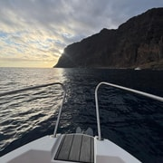

Response from ChifbayThank you very much, Jessy, for this wonderful commentary! We are delighted that you enjoyed the excursion, the atmosphere, the sunset, the swimming, the paddleboarding, and the aperitif. It was a real pleasure to share this moment with you. We hope the video will allow you to keep beautiful souvenirs of this evening for a long time. Looking forward to welcoming you again! 😊
★★★★★
“Wonderful luxury boat trip. Fantastic 3 hour trip with Chifbay! Immaculate boat, amazing service & one of the best guacamoles i’ve tasted made fresh on board by our skipper! Nothing was too much trouble and my mother, son and husband all enjoyed our trip! We had flexibility on swimming for as long or as little as we wanted. Use of a paddleboard and even drone footage provided! A superb professional well organised experienced. Highly recommend!”
★★★★★
“Absolutely Worth It. Couldn’t have asked for a better experience. The whole team was amazing and genuinely made my birthday so special. Thank you for all the effort and for giving us memories we’ll always cherish. Can’t wait to be back! Review of: Swim at Private Madeira Coast Cruise with Snacks and Drinks”
★★★★★
“Absolutely Worth It Couldn’t have asked for a better experience. The whole team was amazing and genuinely made my birthday so special. Thank you for all the effort and for giving us memories we’ll always cherish. Can’t wait to be back!”
★★★★★
“This is a must when in Madeira!. Amazing sunset trip along beautiful Madeira coastline. Family run business, so the little touches made this even more special. Champagne, snacks, a beautiful yacht and crew were friendly and knowledgeable. Everything from booking to meeting to receiving a personalised video memoir afterwards was first rate. Worth every penny. Review of: Swim at Private Madeira Coast Cruise with Snacks and Drinks”
★★★★★
“Top experience 🥰. We took a private boat tour in Madeira, accompanied by a guide team consisting of a father and his two sons – and it was an absolute highlight of our vacation. The three of them were super well-coordinated, warm, and professional at the same time. You notice immediately that passion and experience come together here. Particularly worth mentioning are the excellent drinks, the delicious food, and the fresh, perfectly ripe pineapple – simply brilliant. The boat trip was sporty and fast, but always considerate and safe. Exactly the right balance between action and relaxation. There were 2–3 opportunities to swim – whoever wanted to could get in the water, everything very uncomplicated. The toilet on board is also a real plus. We had a blast the whole time and felt in the best of hands. For us, it's clear: When we are back in Madeira, we will definitely come back! Read less Review of: Swim at Private Madeira Coast Cruise with Snacks and Drinks”
★★★★★
★★★★★
“It was amazing!!!! Hugo and paco were the best. Every detail was perfect and we had the best time. Top tier service, pest poncha, amazing views and overall just a great time. Highly recommend!”
Response from ChifbayThank you so much for your 5 star review. It truly means a lot to us. We are so happy to know that you had such a great time on board. We also really enjoyed having you with us. Your kindness, good mood and amazing energy made the experience even more special. It was a real pleasure to welcome you, and we would be very happy to see you again on your next visit to Madeira. Warm regards Team Chifbay
★★★★★
“We had an absolutely amazing day on the ClifBay boat tour. Everything was perfect, the friendly and professional crew, the delicious snacks and drinks, the relaxing swim stop, and as the highlight of the day we even spotted a whole group of dolphins. Truly magical. The atmosphere on board was wonderful, and you can feel how much the team enjoys what they do. It made the entire experience unforgettable. I would recommend this tour to everyone visiting Madeira. If we could give 6 stars, we definitely would. More than worth it!”


Response from ChifbayThank you for such a beautiful review. It means a lot to know your day with Chifbay became a memory you’ll carry home from Madeira. Sharing the ocean, the smiles and those rare magical encounters is why we love what we do. Your generous “6 stars” truly touched our crew. We’d be delighted to welcome you back aboard⚓️
★★★★★
“Wonderful. It was a wonderful journey. Skipper Paco very friendly,with a contagious smile and very attentive. Hugo always careful to prepare the drinks, so nothing is missing I recommend It was unforgettable, I can't see the time to come back again. Review of: Swim at Private Madeira Coast Cruise with Snacks and Drinks”
★★★★★
“Wonderful. A wonderful and relaxed experience with an excellent crew, very friendly and available. I highly recommend”
★★★★★
“Great Trip - Hugo and Paco were a great pair, highly recommend to anyone visiting the island.”
Response from ChifbayThank you, Thomas. Your words really mean a lot to us. Some days at sea stay with us too, and this was one of them. We’re grateful for the trust, the smiles and the beautiful moments shared together. From all of us at Chifbay, thank you again. We hope to see you back in Madeira.
★★★★★
“Unsere Ausflug war einfach traumhaft!Sehr zu empfehlen!”

Response from ChifbayThank you so much, Elena. That means a lot to us! 🙏 So glad you had a wonderful time on the water — we hope to see you again if you ever come back to Madeira! ⛵
★★★★★
“Our excursion was simply fantastic! Highly recommended!”

Response from ChifbayThank you so much Elena, that means a lot to us! 🙏 So glad you had a wonderful time on the water — we hope to see you again if you ever come back to Madeira! ⛵
★★★★★
“Sehr empfehlenswert! Vater und Sohn, super hilfsbereit und bemüht einen schönen Aufenthalt auf See zu gewährleisten. Viele Sprachen möglich. Man kann sich die Tour individuell gestalten, man erhält viele Informationen wenn man das möchte. Super war die frische Zubereitung der Getränke und Snacks vor Ort, sehr lecker. Rund um eine super Tour, vielen lieben Dank.”


Response from ChifbayWow, thank you for this amazing review, Franziska! It was truly a pleasure having you on board. We're so happy you enjoyed the fresh drinks and snacks, and that the tour felt personal and flexible for you. Father and son say a big thank you! Hope to see you again someday 😊🌊
★★★★★
“Highly recommended! Father and son, super helpful and keen to ensure a pleasant stay at sea. Many languages are available. You can customise the tour, and you get a lot of information if you want. The freshly prepared drinks and snacks on site were great, very tasty. All in all, a great tour. Thank you very much.”
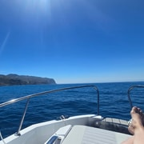
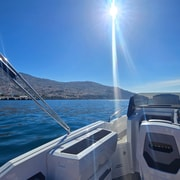
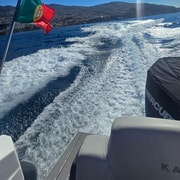
Response from ChifbayWow, thank you for this amazing review Franziska! It was truly a pleasure having you on board. We’re so happy you enjoyed the fresh drinks and snacks, and that the tour felt personal and flexible for you. Father and son say a big thank you! Hope to see you again someday 😊🌊
★★★★★
★★★★★
“Amazing boat trip! Amazing boat trip! We had such a great time together and the whole experience was perfect. A special shoutout to our skipper, Paco, who was incredibly friendly, professional, and made the trip even more enjoyable. Highly recommend!”
Reviews are imported automatically from GetYourGuide and Google as they come in (Tripadvisor is checked by hand — their site blocks automated scraping). Nothing here is edited or reworded.